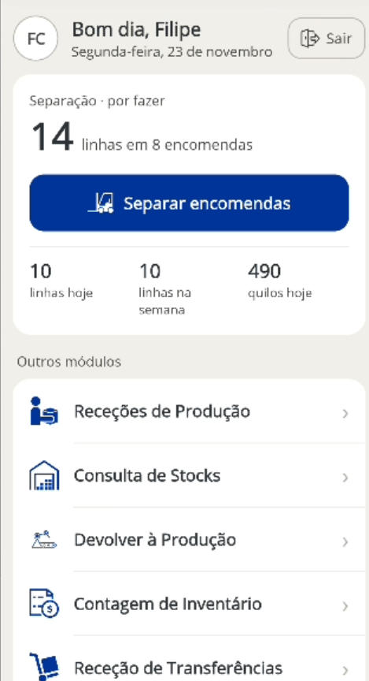

Em produção
AferiFlow Armazém e chão de fábrica
O que o operador lê no terminal entra no ERP no momento. O backoffice e as TVs leem do mesmo sítio, por isso o número do quadro é o número do terminal, que é o número do ERP.
Armazém
- Separação e emissão de guias
- Receção de encomendas e transferências
- Consulta de stocks por código de barras
- Mudança de localização e saídas
- Contagem de inventário
- Vendas ao balcão
Fábrica
- Fabrico com tempos e consumos
- Atribuição de trabalho aos operadores
- Enchimento com controlo metrológico
- Receções e devoluções de produção
Gestão
- Backoffice web: contas, permissões e equipa
- Quadros de produção e logística nas TVs
- Comunicados da empresa nos pavilhões
- Integração nativa com Sage X3
